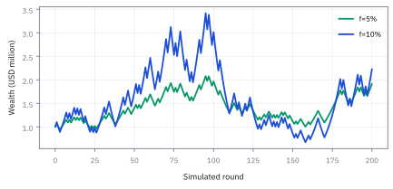
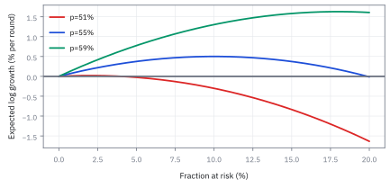
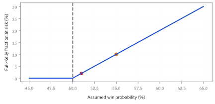

17.2 The Kelly Criterion
ถ้าเราได้เปรียบ ควรลงเงินกี่เปอร์เซ็นต์ของทุนในแต่ละรอบ Kelly ตอบว่าให้เลือกสัดส่วนที่ทำให้ทุนโตแบบทบต้นเร็วที่สุด เพราะเงินข้ามรอบคูณกัน ไม่ได้บวกกัน
เทรดเดอร์คนหนึ่งเจอเกมที่ได้เปรียบ และเล่นซ้ำได้หลายร้อยรอบ ทุกรอบเขาต้องเลือกว่าจะเอาเงินกี่เปอร์เซ็นต์ของทุนที่มีตอนนั้นไปเสี่ยง ถ้าชนะ กำไรเข้าทุน ถ้าแพ้ เงินก้อนที่เสี่ยงหายไป รอบถัดไปเริ่มจากทุนใหม่ เงินจึงทบต้นไปเรื่อย ๆ
ของที่รู้ (ตัวเลขสมมติ):
- ทุนเริ่มต้น $W_0=\$1{,}000{,}000$
- โอกาสชนะแต่ละรอบ $p=55\%$ โอกาสแพ้ $q=1-p=45\%$ และผลของแต่ละรอบไม่เกี่ยวกัน
- เกมจ่ายหนึ่งต่อหนึ่ง: เสี่ยง \$1 ถ้าชนะได้กำไร \$1 ถ้าแพ้เสีย \$1 นั้นไป
เกมนี้ได้เปรียบจริง เพราะกำไรเฉลี่ยต่อเงินเสี่ยง \$1 ในหนึ่งรอบเป็นบวก: $0.55\times\$1-0.45\times\$1=\$0.10$ เทรดเดอร์จึงบอกว่า “ได้เปรียบอยู่แล้ว ยิ่งลงมากยิ่งได้มาก ลงรอบละ 20% ของทุนไปเลย”
ควรเสี่ยงกี่เปอร์เซ็นต์ของทุนต่อรอบ ทุนจึงจะโตเร็วที่สุดในระยะยาว และรอบละ 20% จะเป็นอย่างไร?
ลองตอบก่อนเปิดเฉลย
ขนาดที่ดีที่สุดคือรอบละ 10% ของทุน เรียกว่าขนาด Kelly หน้านี้จะคำนวณให้ดูทีละขั้นว่า ที่ขนาดนี้ทุนโตแบบทบต้นเฉลี่ยราว 0.501% ต่อรอบ
ลองดู 100 รอบที่ชนะ 55 แพ้ 45 ตรงตามโอกาสพอดี ถ้าเสี่ยงสัดส่วน $f$ ของทุน รอบที่ชนะทุนคูณ $1+f$ รอบที่แพ้ทุนคูณ $1-f$ ทุนตอนจบเป็นกี่เท่าของทุนตั้งต้น:
ที่ 10% ทุนโตเป็น 1.65 เท่า ที่ 20% ทุนกลับหดเหลือ 98.6% ทั้งที่ชนะมากกว่าแพ้ 10 รอบ และที่ 40% เหลือแค่ 1.13% ของทุนตั้งต้น ได้เปรียบแต่ลงใหญ่เกิน ทุนก็หดได้
หน้านี้จะแสดงว่าเส้นแบ่งระหว่าง “ทุนโต” กับ “ทุนหด” อยู่ที่ 19.87% เทรดเดอร์ที่ลง 20% จึงเลยเส้นไปนิดเดียว และอยู่ฝั่งที่ทุนค่อย ๆ หด
ภาพรวมก่อนลงสูตร
หน้า VaR และ Expected Shortfall วัดว่าพอร์ตอาจขาดทุนได้มากแค่ไหน หน้านี้ถามอีกด้าน: ถ้ารู้ว่าเราได้เปรียบ ควรลงเงินเท่าไร
คำตอบแรกที่คนส่วนใหญ่คิดคือ ดูกำไรเฉลี่ยต่อรอบ ยิ่งลงมาก กำไรเฉลี่ยยิ่งมาก แต่คำตอบนี้ผิด เพราะเงินข้ามรอบไม่ได้บวกกัน มันคูณกัน ลองดูทุน \$100 ที่แพ้ 50% แล้วชนะ 50%: $100\times0.5\times1.5=\$75$ ขึ้นลงเท่ากันแต่หายไป \$25 ถ้าแพ้ 50% ต้องชนะถึง 100% จึงกลับที่เดิม เพราะ $0.5\times2=1$
เครื่องมือที่ทำให้ผลคูณจัดการง่ายคือ log เพราะ $\ln(xy)=\ln x+\ln y$ ผลคูณของตัวคูณทุนทุกรอบจึงกลายเป็นผลบวกของ log ของแต่ละรอบ (ทำแบบเดียวกับตอนสร้าง lognormal distribution) ค่าเฉลี่ยของ log ตัวคูณทุนต่อรอบ คืออัตราที่ทุนโตแบบทบต้นจริงในระยะยาว Kelly criterion คือการเลือกสัดส่วน $f$ ที่ทำให้ค่านี้สูงสุด
ในระยะยาวมาก ทุนของคนที่ลงขนาด Kelly จะทิ้งห่างคนที่ลงสัดส่วนคงที่แบบอื่นไปเรื่อย ๆ แต่ระหว่างทางทุนแกว่งแรง คนใช้จริงจึงมักลงแค่ครึ่งขนาด (half Kelly) หน้านี้จะแสดงว่าครึ่งขนาดยังได้อัตราโตราวสามในสี่ของขนาดเต็ม
ลำดับของหน้านี้:
- คูณ 20 รอบด้วยมือก่อน แล้วดูว่าไม้ใหญ่ไม่ได้ให้เงินมากกว่าเสมอ
- ใส่ log แล้วหาขนาดที่ดีที่สุดด้วย derivative
- ดูว่าครึ่งขนาดแลกอะไรมา และทำไมค่าเฉลี่ยของเงินหลอกเรา
- ดูว่าเกิดอะไรขึ้นเมื่อประเมินโอกาสชนะสูงไป
- ย้ายไปตลาดที่ราคาขยับต่อเนื่อง ใช้ Itô (chain rule ของกระบวนการสุ่ม) แล้วได้ขนาดที่ขึ้นกับ Sharpe ratio (ผลตอบแทนที่ได้เกินเงินฝาก หารด้วยความผันผวน)
รูป — อัตราโตของ log ต่อรอบเทียบสัดส่วนที่เสี่ยง
ศัพท์ที่ใช้ในหัวข้อนี้
- Kelly criterion
- กฎเลือกว่าแต่ละรอบควรเสี่ยงกี่เปอร์เซ็นต์ของทุน โดยเลือกสัดส่วนที่ทำให้ทุนโตแบบทบต้นเร็วที่สุดในระยะยาว ใช้เมื่อเอากำไรกลับไปลงต่อทุกรอบ ขนาดที่กฎนี้ให้เรียกว่าขนาด Kelly
- อัตราโตแบบทบต้น (log growth)
- เอาตัวคูณทุนของแต่ละรอบ (เช่นชนะแล้วทุนคูณ 1.1) มาใส่ log แล้วหาค่าเฉลี่ย ได้อัตราที่ทุนของเส้นทางทั่วไปโตจริงต่อรอบในระยะยาว ค่านี้ไม่ใช่กำไรเฉลี่ยต่อรอบ
- Edge
- กำไรเฉลี่ยต่อเงินเสี่ยง \$1 ในหนึ่งรอบ เท่ากับ $pb-q$ ในเกมของหน้านี้คือ $0.55\times1-0.45=\$0.10$ ถ้า edge ไม่เป็นบวก ขนาดที่ดีที่สุดคือไม่ลงเลย
- Fractional Kelly
- การลงแค่ส่วนหนึ่งของขนาด Kelly เช่นครึ่งหนึ่ง (half Kelly) เพื่อให้ทุนแกว่งน้อยลง ลดโอกาสที่ทุนร่วงหนักระหว่างทาง และกันความผิดพลาดเมื่อโอกาสชนะที่ประมาณมาสูงเกินจริง
- Leverage
- การกู้เงินมาซื้อสินทรัพย์เพิ่ม จนถือมากกว่าทุนตัวเอง เช่นทุน \$100 ถือหุ้น \$200 ขยายทั้งกำไรและขาดทุน ในตลาดที่ราคาขยับต่อเนื่อง Kelly มักสั่งให้ถือเกินทุน
- Volatility drag
- การที่ความผันผวนกินอัตราโตแบบทบต้น เช่น ขึ้น 10% แล้วลง 10% ทุนเหลือ $1.1\times0.9=0.99$ หรือ 99% ยิ่งแกว่งแรง ยิ่งถูกกินมาก นี่คือเหตุที่ลงใหญ่เกินแล้วทุนโตช้าลง
- Drawdown (การลงลึกระหว่างทาง)
- ทุนตอนนี้ต่ำกว่าจุดสูงสุดที่เคยมีกี่เปอร์เซ็นต์ เช่นทุนเคยถึง \$1.2 ล้าน แล้วตกเหลือ \$0.9 ล้าน คือ drawdown 25%
- Stop-loss
- คำสั่งขายตัดขาดทุนที่ตั้งไว้ล่วงหน้า เมื่อราคาลงถึงระดับที่กำหนด ระบบขายให้อัตโนมัติ จึงจำกัดเงินที่จะเสียต่อการเทรดหนึ่งครั้ง
- Sharpe ratio
- ผลตอบแทนที่ได้เกินเงินฝาก หารด้วยความผันผวน บอกว่าได้ผลตอบแทนส่วนเกินเท่าไรต่อความผันผวนที่ยอมแบก
สัญลักษณ์และหน่วย
| สัญลักษณ์ | ความหมาย | หน่วย |
|---|---|---|
| $W_0,\ W_n$ | ทุนเริ่มต้น และทุนหลัง $n$ รอบ | ดอลลาร์ |
| $f$ | สัดส่วนของทุนที่เสี่ยงต่อรอบ (เสียเท่านี้เมื่อแพ้) | สัดส่วน |
| $f^*$ | ขนาด Kelly คือค่า $f$ ที่ทำให้ทุนโตเร็วที่สุด | สัดส่วน |
| $p,\ q$ | โอกาสชนะ และโอกาสแพ้ $1-p$ | สัดส่วน |
| $b$ | กำไรเมื่อชนะต่อเงินเสี่ยง \$1 | เท่า |
| $n_+,\ n_-$ | จำนวนรอบที่ชนะ และที่แพ้ | รอบ |
| $g(f)$ | อัตราโตแบบทบต้น: ค่าเฉลี่ยของ log ตัวคูณทุนต่อรอบ | ต่อรอบ |
| $x,\ r_w,\ r_l$ | สัดส่วนของทุนที่ลง เงินที่ลงโตเท่าไรต่อ \$1 เมื่อชนะ และหายเท่าไรต่อ \$1 เมื่อแพ้ | สัดส่วน |
| $k$ | จำนวนครั้งที่ชนะใน 400 รอบ | ครั้ง |
| $a$ | เงินในสินทรัพย์เสี่ยงเป็นกี่เท่าของทุน (ตลาดที่ราคาขยับต่อเนื่อง) | เท่าของทุน |
| $\mu,\ r$ | ผลตอบแทนคาดหวังของสินทรัพย์เสี่ยง และดอกเบี้ยเงินสด | ต่อปี |
| $\sigma$ | ความผันผวนของสินทรัพย์เสี่ยง | ต่อรากปี |
| $\mathrm{SR}$ | Sharpe ratio $(\mu-r)/\sigma$ | ต่อรากปี |
| $\lambda$ | ขนาดที่ใช้จริงเป็นกี่เท่าของขนาด Kelly เช่น 0.5 | เท่า |
| $m,\ \tau$ | ค่าที่เราคาดไว้ของผลตอบแทนส่วนเกิน และ SD ของความคลาดของค่านั้น | ต่อปี |
ขั้นที่ 1 — ลองด้วยมือ: 20 รอบ ชนะ 11 แพ้ 9 กับสี่ขนาด
ก่อนใช้ log หรือ derivative ลองคูณตัวเลขตรง ๆ ก่อน เพื่อดูด้วยตาว่าเทรดเดอร์คิดถูกไหม สมมติเล่น 20 รอบ ด้วยโอกาสชนะ 55% จำนวนรอบที่ชนะโดยเฉลี่ยคือ $20\times0.55=11$ ผลที่ “ปกติที่สุด” จึงเป็นชนะ 11 แพ้ 9
ถ้าเสี่ยงสัดส่วน $f$ ของทุน รอบที่ชนะทุนคูณ $1+f$ รอบที่แพ้ทุนคูณ $1-f$ ลำดับชนะแพ้ไม่มีผล เพราะการคูณสลับที่ได้ ลองสี่ขนาด แล้วดูว่าไม้ใหญ่ให้เงินมากกว่าจริงไหม
ผลออกมาไม่เป็นอย่างที่เทรดเดอร์คิด เสี่ยง 5% ทุนโต 7.8% เสี่ยง 10% ทุนโต 10.5% แต่เสี่ยง 20% ทุนกลับหดลง 0.3% และเสี่ยงครึ่งทุนเหลือเงินแค่ 17% ทั้งที่ทุกขนาดชนะมากกว่าแพ้สองรอบเท่ากัน
เหตุผลเห็นได้ถ้าจับคู่ชนะกับแพ้ ชนะหนึ่งรอบแพ้หนึ่งรอบ ทุนคูณ $(1+f)(1-f)=1-f^2$ ซึ่งน้อยกว่า 1 เสมอ ชนะ 11 แพ้ 9 คือคู่แบบนี้ 9 คู่ บวกรอบที่ชนะเกินมาอีก 2 รอบ:
สองรอบที่ชนะเกินมาคือกำไร ให้ตัวคูณ $(1+f)^2$ ส่วนเก้าคู่ชนะแพ้คือค่าแกว่ง ให้ตัวคูณ $(1-f^2)^9$ ซึ่งหดเร็วขึ้นเรื่อย ๆ เพราะ $f$ อยู่ในรูปกำลังสอง ที่ $f=0.10$ ค่าแกว่งยังกินแค่ราว 9% ($0.9135$) แต่ที่ $f=0.20$ กินไปราว 31% ($0.6925$) จนกำไร 1.44 เท่าชดเชยไม่ไหว การคูณจึงลงโทษการแกว่งมากกว่าที่มันให้รางวัล ขนาดที่ดีที่สุดน่าจะอยู่แถว 10% ขั้นถัดไปจะหาให้แม่นด้วย calculus
รูป — ทุนหลัง 20 รอบ (ชนะ 11 แพ้ 9) ที่สี่ขนาด
ขั้นที่ 2 — log เปลี่ยนผลคูณเป็นผลบวก
ขั้นที่ 1 ใช้ได้กับ 20 รอบที่เราเลือกผลเอง แต่เราอยากรู้ว่าเกิดอะไรขึ้นเมื่อเล่นไปเรื่อย ๆ ปัญหาคือทุนหลัง $n$ รอบเป็นผลคูณยาว ๆ ซึ่งวิเคราะห์ยาก ทางออกคือใส่ log เพราะ log เปลี่ยนผลคูณเป็นผลบวก และค่าเฉลี่ยของผลบวกจำนวนมากมีกฎคุมอยู่ คือ law of large numbers: ค่าเฉลี่ยของตัวอย่างจำนวนมาก เข้าใกล้ค่าคาดหวัง
ขั้นนี้ทำให้ทั่วไปขึ้นนิดหนึ่ง เพื่อใช้กับอัตราจ่ายอื่นได้ด้วย: ชนะแล้วได้ $bf$ โดย $b$ คือกำไรต่อเงินเสี่ยง \$1 (เกมของเราคือ $b=1$) แพ้แล้วเสีย $f$ ให้ $n_+$ คือจำนวนรอบที่ชนะ และ $n_-$ คือจำนวนรอบที่แพ้
หัวใจของขั้นนี้คือการหารด้วย $n$ หลังใส่ log ฝั่งขวากลายเป็น สัดส่วนรอบที่ชนะ $n_+/n$ คูณ log ของตัวคูณตอนชนะ บวกสัดส่วนรอบที่แพ้ $n_-/n$ คูณ log ของตัวคูณตอนแพ้ ถ้าแต่ละรอบไม่เกี่ยวกัน และใช้โอกาสชนะ $p$ เดิมทุกรอบ law of large numbers บอกว่าเมื่อเล่นนาน $n_+/n$ เข้าใกล้ $p$ อัตราโตของ log ต่อรอบจึงเข้าใกล้ค่าคงที่ $g(f)$ และทุนของเส้นทางทั่วไปโตราว $e^{n\,g(f)}$ เท่า
Kelly เลือก $f$ ที่ทำให้ $g$ สูงสุด เป้าหมายนี้ต่างจากการทำให้ค่าเฉลี่ยของเงินสูงสุด และขั้นที่ 6 จะแสดงว่าต่างกันมาก
ผลสุดท้ายเป็นแค่ “ประมาณ” เพราะ law of large numbers คุมค่าเฉลี่ยของ log คือ $\ln(W_n/W_0)$ หารด้วย $n$ แต่ไม่ได้คุม $W_n$ เอง ความคลาดเล็ก ๆ ในค่าเฉลี่ย พอคูณกลับด้วย $n$ แล้วไปอยู่ในเลขชี้กำลัง ทุนจริงจึงห่างจาก $W_0e^{ng}$ ได้หลายเท่า (ขั้นที่ 6 จะเห็นว่าหลัง 400 รอบ เส้นทางตรงกลางจบที่ 7.41 เท่า แต่เส้นทางที่แย่จนมีแค่ราว 5 ใน 100 ที่แย่กว่า จบที่ 0.299 เท่า)
ส่วนเงื่อนไข $0\le f\lt1$ ทำให้ทุนเป็นบวกทุกกรณี ถ้า $f=1$ แพ้รอบเดียวทุนเป็นศูนย์ และ $\ln0$ เป็นลบอนันต์
ขั้นที่ 3 — หาจุดสูงสุด: $f^*=(pb-q)/b$
ตอนนี้ $g(f)$ เป็นฟังก์ชันเรียบของตัวแปรเดียว จุดสูงสุดจึงหาได้แบบที่วิศวกรทำเป็นประจำ: หาจุดที่ derivative เป็นศูนย์ แล้วดู derivative ที่สองว่าเป็นยอด ไม่ใช่ก้นหลุม ของที่ใช้มีสองตัว คือ derivative ของ $\ln(1+bf)$ เท่ากับ $b/(1+bf)$ และ derivative ของ $\ln(1-f)$ เท่ากับ $-1/(1-f)$
จังหวะที่ต้องระวังคือการจัดรูป คูณไขว้เพื่อกำจัดเศษส่วน แล้วกระจายได้ $pb-pbf=q+qbf$ ย้ายพจน์ที่มี $f$ ไปข้างเดียวได้ $pb-q=bf(p+q)$ และเพราะ $p+q=1$ จึงเหลือแค่ $bf$
ตัวเศษ $pb-q$ คือ edge หรือกำไรเฉลี่ยต่อเงินเสี่ยง \$1 ในหนึ่งรอบ ถ้า edge ไม่เป็นบวก สูตรให้ค่าศูนย์หรือติดลบ คำตอบจริงจึงเป็น $\max(0,(pb-q)/b)=0$ คือไม่ลงเลย ส่วน $g''$ เป็นผลรวมของสองพจน์ที่ติดลบทุกจุด $g$ จึงโค้งคว่ำทั้งเส้น และมียอดเดียว
อย่าดูแค่ตัวหาร $b$ แล้วสรุปว่าจ่ายมากขึ้นต้องลงน้อยลง เพราะตัวเศษ $pb-q$ ก็โตตาม $b$ ด้วย คง $p=0.55$ ไว้ จ่ายหนึ่งต่อหนึ่งได้ $f^*=0.10$ แต่ถ้าจ่ายสองต่อหนึ่ง ($b=2$):
จ่ายมากขึ้น จึงควรเสี่ยงมากขึ้น
ในการเทรดจริง กำไรกับขาดทุนมักไม่เท่ากัน จึงมีอีกรูปที่สะดวกกว่า: ลงเงินสัดส่วน $x$ ของทุนในสินทรัพย์หนึ่ง ถ้าชนะ เงินที่ลงโต $r_w$ ต่อ \$1 (เช่น $r_w=0.5$ คือขึ้น 50%) ถ้าแพ้ เงินที่ลงหาย $r_l$ ต่อ \$1 หาจุดที่ derivative เป็นศูนย์แบบเดียวกับข้างบน:
ดึง $p/r_l$ ออกมาเป็นตัวร่วม จะเห็นว่าขนาดขึ้นกับอะไร: $x^*=\frac{p}{r_l}\big(1-\frac{1}{(p/q)(r_w/r_l)}\big)$ ตัวในวงเล็บขึ้นกับสองอย่าง คือ $p/q$ (ชนะบ่อยกว่าแพ้กี่เท่า) และ $r_w/r_l$ (ตอนชนะได้มากกว่าตอนแพ้เสียกี่เท่า) ถ้าผลคูณของสองตัวนี้ไม่เกิน 1 วงเล็บจะไม่เป็นบวก และไม่ควรลง
เกมของเราคือ $r_w=r_l=1$ ได้ $x^*=0.55-0.45=0.10$ ตรงกับ $f^*$ ทุน \$1,000,000 จึงเสี่ยง $0.10\times\$1{,}000{,}000=\$100{,}000$ ในรอบแรก
ขั้นที่ 4 — อัตราโตที่ห้าขนาด: ยอดที่ 10% หน้าผาเลย 20%
ขั้นที่ 3 บอกว่ายอดอยู่ที่ 10% แต่ยังไม่บอกว่าถ้าพลาดจากยอดไปบ้าง จะเสียมากแค่ไหน ขั้นนี้จึงแทนค่า $g$ ที่ห้าขนาด เพื่อดูรูปร่างของเส้นรอบยอด ซึ่งก็คือเส้นในรูปแรกของหน้า ในแต่ละบรรทัด ตัวเลขแรกคือก้อนชนะ $0.55\ln(1+f)$ ตัวเลขที่สองคือก้อนแพ้ $0.45\,|\ln(1-f)|$ อัตราโตคือก้อนชนะลบก้อนแพ้
ดูสองตัวเลขนี้ก่อน: $\ln1.1=0.09531$ แต่ $\ln0.9=-0.10536$ ขยับ 10% เท่ากัน แต่ขาลงลึกกว่าขาขึ้น เมื่อนับแบบทบต้น ขาดทุน 10% จึงเจ็บกว่ากำไร 10% เสมอ พอเพิ่มขนาด ก้อนแพ้จึงโตเร็วกว่าก้อนชนะ จนแซงกันที่ $f=19.87\%$ ค่านี้หาด้วย bisection คือแบ่งช่วงครึ่งซ้ำ ๆ จนเจอจุดที่ $g=0$ (โค้ดท้ายหน้าทำให้ดู) ที่ 20% อัตราโตจึงติดลบแล้ว
ทำไมจุดศูนย์อยู่ราวสองเท่าของ Kelly พอดี? กระจาย log ถึงกำลังสอง: $\ln(1+f)\approx f-\tfrac12f^2$ และ $\ln(1-f)\approx-f-\tfrac12f^2$ แทนลงใน $g$ แล้วใช้ $p+q=1$:
นี่คือพาราโบลาคว่ำ ยอดอยู่ที่ $f=p-q=0.10$ และตัดศูนย์ที่ $f=2(p-q)=0.20$ พจน์กำลังสูงกว่าที่ตัดทิ้งไป ดึงจุดจริงเข้ามานิดหน่อยเป็น 19.87% พาราโบลาแบบเดียวกันนี้จะกลับมาอีกครั้งในตลาดที่ราคาขยับต่อเนื่อง
ครึ่งขนาดได้ $0.0037526/0.0050084=0.749$ หรือราวสามในสี่ของอัตราโตสูงสุด ลองแปลงเป็นเงิน: ใน 100 รอบที่ชนะ 55 แพ้ 45 พอดี $\ln(W_{100}/W_0)=55\ln(1+f)+45\ln(1-f)=100\,g(f)$ ทุนจึงคูณ $e^{100g}$:
ขนาด 40% หรือสี่เท่าของ Kelly เหลือทุนแค่ 1.13% ตรงกับเฉลยของคำถามเปิดหน้า
อีกมุมหนึ่งคือเวลาที่ใช้ทำทุนให้ถึงเป้า ทุนโตเป็น $C$ เท่าเมื่อ $e^{ng}=C$ หรือ $n=\ln C/g$ ถ้าเป้าคือทุนสองเท่า ($C=2$):
ขนาดเต็มใช้ราว 138 รอบ ครึ่งขนาดใช้ราว 185 รอบ ขนาด Kelly ถึงเป้าเร็วที่สุด และในระยะยาวมาก ทุนของ Kelly หารด้วยทุนของกลยุทธ์สัดส่วนคงที่อื่นที่มี $g$ ต่ำกว่า จะโตขึ้นไม่มีขอบเขต (แทบแน่นอน) เพราะอัตราส่วนนี้โตราว $e^{n(g_{\text{Kelly}}-g)}$ ซึ่งเลขชี้กำลังเป็นบวก ส่วนกลยุทธ์ที่ $g\lt0$ ทุนจะเข้าใกล้ศูนย์ แม้ได้เปรียบทุกรอบ
ขั้นที่ 5 — Kelly สั่งเป็นสัดส่วน ไม่ใช่จำนวนเงิน
สูตรให้สัดส่วน $f$ ของทุน “ตอนนี้” ไม่ใช่เงินก้อนเดิมทุกรอบ ข้อนี้สำคัญกว่าที่เห็น ลองตามเงินเสี่ยงหลังรอบแรกที่ $f=0.10$ โดย $W_1^{+}$ คือทุนหลังชนะรอบแรก และ $W_1^{-}$ คือทุนหลังแพ้รอบแรก แล้วดูว่าทำไมการเสี่ยงเป็นสัดส่วนกันไม่ให้ทุนถึงศูนย์
ชนะแล้วเงินเสี่ยงรอบถัดไปเพิ่มเป็น \$110,000 แพ้แล้วลดเหลือ \$90,000 ขนาดของไม้ปรับตามทุนเอง ผลข้างเคียงคือ ชนะหนึ่งแพ้หนึ่ง ไม่ว่าลำดับไหน ทุนคูณ $1.1\times0.9=0.99$ เหลือ \$990,000 หายไป 1% ทั้งที่ขึ้นลงเท่ากัน นี่คือ volatility drag ตัวเดียวกับที่ $\ln0.9$ ลึกกว่า $\ln1.1$
$W_{10}$ คือกรณีร้าย: แพ้สิบรอบติด ในเกมที่แพ้ 45% โอกาสนี้คือ $0.45^{10}=0.00034$ หรือ 0.034% น้อย แต่ไม่ใช่ศูนย์ ถ้าเสี่ยงเป็นสัดส่วน ทุนยังเหลือ \$348,678 เพราะแต่ละรอบเสียแค่ 10% ของที่เหลืออยู่ แต่ถ้าเสี่ยง \$100,000 เท่าเดิมทุกรอบ สิบรอบเสีย $10\times\$100{,}000=\$1{,}000{,}000$ หมดทุนพอดี
รูป — สองเส้นทางที่ใช้ผลชนะแพ้ชุดเดียวกัน

รูปนี้ลองเล่นจริง 200 รอบ โดยสุ่มผลชนะแพ้ครั้งเดียว ด้วยโอกาสชนะ 55% (ตั้งตัวสุ่มด้วยเลข seed 172 ใครรันซ้ำจะได้ชุดเดิม) แล้วใช้ผลชุดเดียวกันกับสองขนาด เส้นเขียวคือเสี่ยง 5% เส้นน้ำเงินคือเสี่ยง 10% แกนตั้งคือทุนเป็นล้านดอลลาร์ เริ่มที่ 1 ความต่างของสองเส้นจึงมาจากขนาดอย่างเดียว
ให้ดูว่าเส้น 10% ขึ้นแรงกว่าในช่วงที่ชนะติดกัน และลงแรงกว่าในช่วงที่แพ้ติดกัน เส้นทางนี้เป็นแค่หนึ่งตัวอย่าง ขั้นถัดไปจะนับครบทุกเส้นทางที่เป็นไปได้ใน 400 รอบพร้อมกัน
ขั้นที่ 6 — ครึ่งขนาดซื้ออะไรมา: นับครบ 400 รอบโดยไม่ต้องสุ่ม
ครึ่งขนาดได้อัตราโตแค่ 75% ของขนาดเต็ม แล้วเราได้อะไรตอบแทน? คำตอบอยู่ที่ว่าทุนตอนจบกระจายแค่ไหน ไม่ใช่ตัวเลขตัวเดียว
ข่าวดีคือไม่ต้องสุ่ม ใน 400 รอบ ทุนตอนจบขึ้นกับจำนวนครั้งที่ชนะ $k$ อย่างเดียว เพราะลำดับไม่มีผล และ $k$ เป็น binomial(400, 0.55) คือจำนวนครั้งที่สำเร็จใน 400 ครั้งที่ไม่เกี่ยวกัน ครั้งละ 55% จึงหาสามค่านี้ได้ตรง ๆ:
- เส้นทางตรงกลาง (median): ครึ่งหนึ่งของเส้นทางจบดีกว่านี้ อีกครึ่งจบแย่กว่า
- เส้นทางที่เปอร์เซ็นไทล์ 5: เส้นทางที่แย่จนมีแค่ 5 ใน 100 ที่แย่กว่า
- ค่าเฉลี่ยของเงิน $\mathbb E[W_n]$ เมื่อเฉลี่ยทุกเส้นทาง
ในบรรทัดที่คำนวณทุน เลขชี้กำลังคือ $k\ln(1+f)$ ลบ $(400-k)\,|\ln(1-f)|$ เช่นที่ $f=0.10,\ k=220$ ได้ $220\ln1.1=20.9682$ และ $180\,|\ln0.9|=18.9649$ ส่วนโอกาสสะสม $P(k\le\cdot)$ มาจากสูตร binomial ที่โค้ดท้ายหน้าคำนวณ
median ของ $k$ คือ 220 เพราะโอกาสสะสม $P(k\le k_0)$ ข้าม 0.5 ที่ $k_0=220$ (จาก 0.4793 เป็น 0.5194) ในทำนองเดียวกัน เปอร์เซ็นไทล์ 5 คือ 204 เพราะโอกาสสะสมข้าม 0.05 ที่นั่น ทุนเพิ่มตาม $k$ เสมอ เส้นทางตรงกลางของทุนจึงเป็นเส้นทางที่ชนะ 220 ครั้ง
ผลคือ เส้นทางตรงกลางจบที่ 7.41 เท่าสำหรับขนาดเต็ม และ 4.49 เท่าสำหรับครึ่งขนาด ในเส้นทางปกติขนาดเต็มชนะ แต่ที่เปอร์เซ็นไทล์ 5 ขนาดเต็มเหลือ 0.299 เท่า คือเสีย $1-0.299\approx70\%$ ขณะที่ครึ่งขนาดยังเหลือ 0.905 เท่า เสียแค่ราว 10% ทั้งสองคือโชคชุดเดียวกันทุกประการ (ชนะ 204 จาก 400) ต่างกันแค่ขนาดที่เลือก
อีกคำถามที่คนถือเงินจริงสนใจคือ “ระหว่างทาง ทุนเคยลงไปเหลือครึ่งหนึ่งไหม” คำถามนี้ขึ้นกับลำดับชนะแพ้ จึงต้องนับทีละรอบ: เก็บโอกาสของแต่ละจำนวนชนะไว้ รอบไหนที่ทุนแตะครึ่ง ก็ย้ายโอกาสนั้นออกไปนับเป็น “เคยถึงครึ่ง” โค้ดท้ายหน้าทำครบ 400 รอบ ได้ 0.436 สำหรับขนาดเต็ม และ 0.104 สำหรับครึ่งขนาด ครึ่งขนาดเสียอัตราโตไปหนึ่งในสี่ แต่โอกาสเจ็บหนักระหว่างทางเหลือแค่ $0.104/0.436\approx0.24$ หรือราวหนึ่งในสี่ของเดิม
สูตรค่าเฉลี่ยท้ายกรอบตอบคำถามที่ค้างไว้: ทำไมไม่เลือก $f$ ให้ค่าเฉลี่ยของเงินสูงสุดแทน ในหนึ่งรอบ ค่าเฉลี่ยของตัวคูณทุนคือ $1+f(p-q)$ และเพราะรอบไม่เกี่ยวกัน ค่าเฉลี่ยของผลคูณจึงเท่ากับผลคูณของค่าเฉลี่ย ค่านี้เพิ่มตาม $f$ ตลอด จึงสั่งให้ลงหมดตัวทุกรอบ
ที่ $f=1$ ค่าเฉลี่ยคือ $(1+1\times0.1)^{400}=1.1^{400}\approx3.6\times10^{16}$ เท่า แต่ทั้งหมดมาจากเส้นทางเดียวที่ชนะครบ 400 รอบ ซึ่งมีโอกาส $0.55^{400}\approx10^{-104}$ เส้นทางอื่นจบที่ศูนย์หมด แม้ที่ขนาด Kelly ค่าเฉลี่ย 53.52 เท่าก็สูงกว่าเส้นทางตรงกลาง $53.52/7.41\approx7.2$ เท่า เพราะเส้นทางที่โชคดีมากไม่กี่เส้นดึงค่าเฉลี่ยขึ้นไป ค่าเฉลี่ยตอบคำถามว่า “ถ้ามีจักรวาลคู่ขนานนับไม่ถ้วน เฉลี่ยแล้วได้เท่าไร” แต่คนถือเงินมีเส้นทางเดียว
รูป — ช่วงของทุนหลัง 400 รอบ: Kelly เต็มกับครึ่ง Kelly
ขั้นที่ 7 — ถ้าโอกาสชนะจริงคือ 52% ไม่ใช่ 55%
ทุกอย่างข้างบนถือว่าเรารู้โอกาสชนะ $p$ แน่นอน ในชีวิตจริง $p$ ไม่ได้มาจากฟ้า มันประมาณจากข้อมูลย้อนหลัง และ standard error ของตัวประมาณ บอกว่าค่าที่ประมาณคลาดได้ง่าย สมมติเราเชื่อว่า $p=55\%$ จึงลง 10% แต่ความจริงคือ $p=52\%$
ที่อัตราจ่ายหนึ่งต่อหนึ่ง ($b=1$) สูตร Kelly ลดรูปเป็น $f^*=p-q=p-(1-p)=2p-1$ ขั้นนี้หาขนาดที่ถูกของเกมจริง แล้วดูว่าขนาด 10%, 5% และ 4% ให้อัตราโตเท่าไรในเกม 52% โดย $g_{0.52}$ คือ $g$ ที่ใช้ $p=0.52$
โอกาสชนะคลาดไปแค่ 3 จุด (55 กับ 52) แต่ขนาดที่ใช้กลายเป็น $0.10/0.04=2.5$ เท่าของขนาดที่ถูก ขนาด 10% ยังเลยจุดศูนย์ของเกม 52% ไปแล้ว (จุดนั้นอยู่ที่ 7.99% หาด้วย bisection แบบเดียวกับขั้นที่ 4) อัตราโตจึงติดลบราว 0.101% ต่อรอบ ทั้งที่กำไรเฉลี่ยต่อเงินเสี่ยง \$1 ยังเป็นบวก $0.52-0.48=\$0.04$ ทุนของเส้นทางทั่วไปจึงหดลงเรื่อย ๆ
ถ้าตอนแรกเราใช้ครึ่ง Kelly ของความเชื่อเดิม คือ 5% เกมจริงยังให้ 0.075% ต่อรอบ หรือ $0.000750/0.000800\approx94\%$ ของค่าสูงสุดของเกม 52% เหตุผลคือรูปร่างของเส้นที่เห็นในขั้นที่ 4: ฝั่งขวาของยอดลงชันกว่าฝั่งซ้าย ลงเล็กไปจึงเสียน้อย ลงใหญ่ไปเสียมาก
ครึ่ง Kelly จึงเป็นประกันราคาถูกต่อการประเมินโอกาสชนะสูงเกิน แต่ไม่ได้รับรองกำไร ถ้า $p$ จริงต่ำกว่านี้อีก ครึ่ง Kelly ก็ขาดทุนได้
รูป — ประมาณโอกาสชนะเกินไปสามจุด

แกนนอนคือสัดส่วนที่เสี่ยง 0 ถึง 20% แกนตั้งคืออัตราโตต่อรอบเป็นเปอร์เซ็นต์ เส้นน้ำเงินคือเกมที่เราเชื่อ (โอกาสชนะ 55% ยอดที่ 10%) เส้นแดงคือเกมจริง (52% ยอดที่ 4%) เส้นจุดแนวตั้งคือขนาด 10% ที่เลือกจากความเชื่อ จุดแดงคืออัตราโตจริงที่ขนาดนั้น −0.101% ต่อรอบ ซึ่งอยู่ใต้เส้นศูนย์ ขนาดที่ดีที่สุดของเกมหนึ่ง จึงอยู่ในเขตขาดทุนของอีกเกมที่ต่างกันแค่ 3 จุด
รูป — ความได้เปรียบเล็กน้อยสร้างขนาดที่เปราะบาง

แกนนอนคือโอกาสชนะ 45 ถึง 65% ที่อัตราจ่ายหนึ่งต่อหนึ่ง แกนตั้งคือขนาด Kelly $2p-1$ ซึ่งเป็นศูนย์เมื่อไม่ได้เปรียบ (ซ้ายของเส้นประที่ 50%) จุดแดงคือ 52% ได้ $2(0.52)-1=4\%$ จุดส้มคือ 55% ได้ $2(0.55)-1=10\%$
โอกาสชนะต่างกันแค่ 3 จุด แต่ขนาดต่างกัน $10/4=2.5$ เท่า เพราะขนาดขึ้นกับ edge $2p-1$ ซึ่งเป็นส่วนต่างเล็ก ๆ เหนือ 50% ไม่ได้ขึ้นกับตัวโอกาสชนะเอง ความคลาดเล็ก ๆ ในส่วนต่างที่เล็กอยู่แล้ว จึงกลายเป็นความคลาดใหญ่ในขนาด
ขั้นที่ 8 — แบบต่อเนื่อง: log ให้พจน์ลบครึ่งมาเอง
ตลาดจริงไม่ได้เล่นเป็นรอบชนะแพ้ ราคาหุ้นขยับตลอดเวลา ลองย้ายแนวคิดเดียวกันมาที่ตลาดแบบนั้น โดยตั้งสมมติฐานของ model ไว้แบบนี้:
- ถือเงินสัดส่วน $a$ ของทุนในสินทรัพย์เสี่ยง เช่นกองทุนดัชนีหุ้น ที่เหลือ $1-a$ อยู่ในบัญชีเงินสดที่ได้ดอกเบี้ย $r$ ต่อปี ถ้า $a\gt1$ คือกู้เงินมาซื้อเพิ่ม (leverage)
- สินทรัพย์เสี่ยงมีผลตอบแทนคาดหวัง $\mu$ ต่อปี และความผันผวน $\sigma$ ต่อปี ในช่วงเวลาสั้น $dt$ ราคา $S$ เปลี่ยนไป $\frac{dS}{S}=\mu\,dt+\sigma\,dB_t$ โดย $dB_t$ คือการสุ่มที่มีค่าเฉลี่ยศูนย์และ variance $dt$ (ส่วนเล็ก ๆ ของ Brownian motion)
- คงสัดส่วน $a$ ไว้ตลอดด้วยการซื้อขายปรับพอร์ตทุกขณะ ไม่มีต้นทุนซื้อขาย และกู้หรือฝากได้ที่อัตรา $r$ เดียวกัน
ในหนึ่งช่วง $dt$ ทุนโตจากสองส่วน: ส่วนเงินสด $(1-a)\,r\,dt$ กับส่วนสินทรัพย์ $a(\mu\,dt+\sigma\,dB_t)$ รวมกันแล้วจัดรูปได้บรรทัดแรกข้างล่าง แต่เราต้องการอัตราโตของ $\ln W$ ไม่ใช่ของ $W$ และการหา log ของตัวแปรสุ่มที่ขยับต่อเนื่อง ต้องใช้ Itô's lemma ซึ่งคือ chain rule ของกระบวนการสุ่ม ที่มีพจน์ลำดับสองเพิ่มเข้ามา
จังหวะสำคัญคือการใช้ Itô กับ $\ln W$ chain rule ธรรมดาให้แค่ $dW/W$ แต่ Itô ต้องเก็บพจน์ลำดับสองด้วย เพราะในโลกสุ่ม $(dW)^2$ มีขนาดพอ ๆ กับ $dt$ จึงทิ้งไม่ได้ derivative แรกของ $\ln W$ คือ $1/W$ derivative ที่สองคือ $-1/W^2$ พจน์ลำดับสองจึงเป็น $-\tfrac12(dW/W)^2$ ซึ่งติดลบเพราะ log โค้งคว่ำ
ค่า $(dW/W)^2$ คิดจากกฎ $(dB_t)^2=dt$ (quadratic variation) ยกกำลังสองบรรทัดแรกแล้ว พจน์ $dt^2$ กับ $dt\,dB_t$ เล็กกว่า $dt$ มากจนทิ้งได้ จึงเหลือแค่ $(a\sigma)^2(dB_t)^2=a^2\sigma^2\,dt$
พจน์ $-\tfrac12a^2\sigma^2$ คือ volatility drag ตัวเดียวกับ $1.1\times0.9=0.99$ ในเกมเป็นรอบ และ $g(a)$ คือพาราโบลาคว่ำแบบเดียวกับที่ได้จากการกระจาย log ในขั้นที่ 4 กำไรโตเป็นเส้นตรงตาม $a$ แต่ราคาของความผันผวนโตตาม $a^2$ จึงต้องมีจุดที่การเพิ่มขนาดเริ่มทำร้ายตัวเอง
ในตลาดมีของจริงที่ถือสัดส่วนคงที่แบบนี้ขายอยู่ คือ leveraged ETF: กองทุนที่ซื้อขายเหมือนหุ้น และปรับพอร์ตทุกวันให้ได้ $\beta$ เท่าของผลตอบแทนรายวันของดัชนี ETF สองเท่าคือ $\beta=2$ ส่วน ETF กลับทิศ ($\beta=-1$) ขึ้นเมื่อดัชนีลง ลองดูดัชนีที่ขึ้นจาก 100 เป็น 105 แล้วกลับมา 100 วันแรกดัชนี +5% วันที่สอง $100/105-1=-4.7619\%$ มูลค่า ETF สองวันเป็นแบบนี้:
ทั้งคู่ขาดทุนทั้งที่ดัชนีกลับที่เดิม ทำ Itô แบบเดียวกันกับ ETF มูลค่า $E$ ที่ $dE/E=\beta\,dS/S$ แล้วเทียบกับ log ของดัชนี:
บรรทัดสุดท้ายได้จากเอา $\beta$ คูณบรรทัดกลาง แล้วลบออกจากบรรทัดแรก มันบอกว่า log ของ ETF ขยับ $\beta$ เท่าของ log ของดัชนี แล้วโดนหัก drag ที่มีตัวคูณ $\tfrac12(\beta^2-\beta)$
ในหนึ่งวัน $\sigma^2dt$ ประมาณได้ด้วยกำลังสองของ log ผลตอบแทนของดัชนีวันนั้น ให้ $x_1=\ln(105/100)=0.04879$ และ $x_2=\ln(100/105)=-0.04879$ ดัชนีกลับที่เดิม $x_1+x_2=0$ ส่วนแรกจึงหายไป และทั้ง $\beta=2$ กับ $\beta=-1$ ให้ตัวคูณ $\tfrac12(\beta^2-\beta)=1$ เท่ากัน:
ผลนี้ใกล้กับ 99.52 ที่คูณตรง ๆ มาก
รูป — ดัชนีกลับที่เดิม แต่ ETF สองเท่าและ ETF กลับทิศขาดทุน
ขั้นที่ 9 — หุ้น 9% ความผันผวน 18% เงินฝาก 2%: ถือกี่เท่าของทุน
สถานการณ์: ผู้จัดการพอร์ตมีทุน \$1,000,000 และต้องเลือกว่าจะถือหุ้น (เช่นกองทุนดัชนี) กี่เท่าของทุน ส่วนที่เหลือฝากเป็นเงินสด หรือถ้าถือเกินทุนก็กู้ส่วนเกินมา เขาใช้ $g(a)$ จากขั้นที่ 8 เพื่อหาคำตอบ
โจทย์ให้อะไรมาบ้าง (ตัวเลขสมมติ ใกล้กับตลาดหุ้นจริง):
- ผลตอบแทนคาดหวังของหุ้น $\mu=9\%$ ต่อปี
- ความผันผวนของหุ้น $\sigma=18\%$ ต่อปี
- ดอกเบี้ยเงินฝากและเงินกู้ $r=2\%$ ต่อปี ผลตอบแทนส่วนเกินจึงเป็น $\mu-r=0.09-0.02=0.07$
$g(a)$ เป็นพาราโบลาคว่ำ ยอดจึงหาได้ด้วย derivative ตัวเดียว ในคำตอบจะมีค่า $(\mu-r)/\sigma$ โผล่มา คือผลตอบแทนที่ได้เกินเงินฝาก หารด้วยความผันผวน ค่านี้มีชื่อว่า Sharpe ratio (SR) บรรทัด $g(a^*)$ ได้จากแทน $a^*$ กลับลงใน $g(a)$
คำตอบ: ถือหุ้นประมาณ $a^*=2.16$ เท่าของทุน คือหุ้นมูลค่า $2.1605\times\$1{,}000{,}000=\$2{,}160{,}500$ โดยกู้มาอีก \$1,160,500 หรือ 116% ของทุน
ค่า 9.56% คืออัตราโตของ log ต่อปี ไม่ใช่กำไรธรรมดา ใน model นี้ $\ln W$ หลังหนึ่งปีเป็น Normal ที่มีค่าเฉลี่ย $\ln W_0+g$ ทุนของเส้นทางตรงกลาง (median) จึงเป็น $W_0e^{g}$ ถ้าเริ่มที่ \$1,000,000 ได้ $1{,}000{,}000\,e^{0.0956173}\approx\$1{,}100{,}338$ หรือกำไรราว 10.03%
ความผันผวนของพอร์ตคือ $a^*\sigma=2.1605\times18\%=38.89\%$ ต่อปี ซึ่งเท่ากับ SR 0.38889 พอดี เรื่องนี้ไม่ใช่บังเอิญ เพราะ $a^*\sigma=\frac{\mu-r}{\sigma^2}\,\sigma=\frac{\mu-r}{\sigma}=\mathrm{SR}$ จึงได้กฎจำง่าย: ที่ขนาด Kelly ความผันผวนของพอร์ตต่อทุน เท่ากับ Sharpe ratio ทั้งสองต้องวัดในหน่วยเวลาเดียวกัน เช่นต่อปีทั้งคู่
ตัวอย่างการใช้กฎนี้: กลยุทธ์ market-neutral (ถือหุ้นขาขึ้นและขาลงหักล้างกัน จนกำไรไม่ขึ้นกับทิศของตลาด) ที่มี Sharpe ratio รายปี 2 กับทุน \$1 พันล้าน ขนาด Kelly คือพอร์ตที่มีความผันผวนรายปี 2 เท่าของทุน หรือราว \$2 พันล้าน
บรรทัด $\lambda$ ตอบเรื่องการลงแค่บางส่วน ($\lambda$ คือขนาดที่ใช้เป็นกี่เท่าของ $a^*$) แทน $a=\lambda a^*$ ลงใน $g$ แล้วใช้สองข้อ คือ $a^*(\mu-r)=\frac{(\mu-r)^2}{\sigma^2}=\mathrm{SR}^2$ และ $a^*\sigma=\mathrm{SR}$ จากย่อหน้าก่อน:
ครึ่งขนาด ($\lambda=\tfrac12$) ได้ $2(0.5)-0.5^2=\tfrac34$ ของส่วนเกิน คือ 7.67% โดยแบกความผันผวนแค่ครึ่งเดียว $38.89\%/2=19.44\%$
สัดส่วนสามในสี่นี้ไม่ขึ้นกับ $\mu$, $r$ หรือ $\sigma$ และใกล้กับ 0.749 ของเกมเป็นรอบในขั้นที่ 4 ส่วนสองเท่า ($\lambda=2$) ได้ $2(2)-2^2=0$ คืออัตราโตเท่าเงินฝากพอดี ทั้งที่แบกความผันผวน $2\times38.89\%=77.8\%$
ตัวอย่างนี้ใกล้ของจริง ข้อมูลย้อนหลังของตลาดหุ้นสหรัฐ ช่วงปี 1926 ถึง 2018 ให้ Sharpe ratio ราว 0.42 และความผันผวนราว 19% ต่อปี เพราะ $a^*=\frac{\mu-r}{\sigma^2}=\frac{\mathrm{SR}}{\sigma}$ จึงได้ $0.42/0.19\approx2.2$ เท่าของทุน Kelly บอกให้กู้มาลงหุ้นเกินเท่าตัว แต่ใครทำจริงต้องรับการลงลึกระหว่างทางที่โหดมาก
ตรวจเองใน 10 วินาที: $\dfrac{0.389^2}{2}+0.02=\dfrac{0.151}{2}+0.02=0.0756+0.02=9.56\%$
รูป — Fractional Kelly: ได้อัตราโตเท่าไรต่อความผันผวนที่ยอมแบก
ขั้นที่ 10 — ไม่รู้ค่าเฉลี่ยแน่นอน Kelly ก็หดเอง
ขั้นที่ 9 ใส่ $\mu=9\%$ ลงไปราวกับรู้แน่ แต่ $\mu$ เป็นค่าประมาณจากข้อมูลย้อนหลัง และคลาดได้มาก ลองดูขนาดของความคลาด: ค่าเฉลี่ยรายปีที่ประมาณจากข้อมูล $N$ ปี มี standard error เท่ากับ $\sigma/\sqrt N$ ดังนั้นที่ความผันผวน 18% กับข้อมูล 25 ปี ได้ $0.18/\sqrt{25}=0.18/5=3.6\%$ ต่อปี ซึ่งใหญ่มากเมื่อเทียบกับผลตอบแทนส่วนเกิน 7% ที่เรากำลังประมาณ
ลองใส่ความไม่รู้นี้เข้าไปในการหาขนาดตรง ๆ คิดเป็นงวดละหนึ่งปี ให้ผลตอบแทนส่วนเกินเหนือเงินฝากของปีหนึ่งเป็น $R=\theta+\sigma\xi$ โดย
- $\theta$ คือค่าเฉลี่ยจริงที่เราไม่รู้แน่ เราคาดว่ามันอยู่แถว $m=7\%$ และคลาดได้ราว $\tau$ (SD ของความไม่รู้ ปัดจาก 3.6% เป็น $\tau=4\%$)
- $\xi$ คือการสุ่มของตลาดในปีนั้น มีค่าเฉลี่ยศูนย์ variance 1 และไม่เกี่ยวกับ $\theta$
ถ้าไม่นับดอกเบี้ยเงินฝาก ทุนหลังหนึ่งปีคูณ $1+aR$ เราต้องการ $a$ ที่ทำให้ $\mathbb E[\ln(1+aR)]$ สูงสุด แต่ค่าคาดหวังของ log หาตรง ๆ ไม่ได้ จึงประมาณ log ด้วย Taylor ถึงกำลังสองก่อน แล้วค่อยหาค่าคาดหวัง โดยใช้ $m^2=0.0049$, $\sigma^2=0.0324$ และ $\tau^2=0.0016$
Taylor ถึงกำลังสอง $\ln(1+x)\approx x-\tfrac12x^2$ ใช้ได้เมื่อ $aR$ ไม่ใหญ่นัก จากนั้นต้องหา $\mathbb E[R^2]$ ซึ่งเท่ากับ $(\mathbb E R)^2+\operatorname{Var}R$ และ variance ของ $R$ มีสองก้อน คือการสุ่มของตลาด $\sigma^2$ กับความไม่รู้ของเรา $\tau^2$ สองก้อนนี้ไม่เกี่ยวกัน จึงบวกกันได้ตรง ๆ
ค่าคาดหวังที่ได้เป็นพาราโบลาคว่ำของ $a$ อีกครั้ง ตั้ง derivative เป็นศูนย์ $m-a(m^2+\sigma^2+\tau^2)=0$ ก็ได้ $a^*_{\tau}$ จุดสำคัญคือ ความไม่รู้ $\tau^2$ เข้าไปอยู่ในตัวหารข้างเดียวกับความผันผวน $\sigma^2$ มันจึงทำตัวเหมือนความผันผวนที่เพิ่มขึ้น ตัวหารโตขึ้น และขนาดหดลง
ตัวเลข 1.877 ต่ำกว่า 2.1605 ของขั้นที่ 9 ด้วยเหตุผลอื่น: สูตรประมาณนี้ปรับพอร์ตปีละครั้ง และมี $m^2$ ในตัวหาร ถ้า $m$ เล็กเทียบกับ $\sigma$ จนทิ้ง $m^2$ ได้ จะเหลือ $m/\sigma^2=0.07/0.0324=2.1605$ เท่าสูตรต่อเนื่อง สิ่งที่ควรดูคือผลของ $\tau$ อย่างเดียว: ความไม่แน่นอน 4% ทำให้ขนาดลดจาก 1.877 เป็น 1.799 คือลด $1-1.799/1.877\approx4\%$ ถ้าความไม่แน่นอนใหญ่ถึง $\tau=10\%$ ($\tau^2=0.01$):
ลดไปราว $1-1.480/1.877\approx21\%$ ยังไม่ถึงครึ่ง ความไม่แน่นอนอย่างเดียวจึงยังไม่พอจะอธิบายการลงแค่ครึ่ง Kelly เหตุหลักคือค่าประมาณมักเอนไปทางสูงเกิน เพราะกลยุทธ์ที่ถูกเลือกมาใช้ มักเป็นตัวที่ข้อมูลย้อนหลังดูดีเกินจริง (แบบเกมที่เชื่อว่า 55% แต่จริงคือ 52% ในขั้นที่ 7) บวกกับการลงลึกระหว่างทางที่คนถือเงินรับไม่ไหว (ขั้นที่ 6)
ความผิดที่ให้คำตอบผิดแบบเงียบ ๆ
อ่าน $f^*$ เป็นมูลค่าที่ซื้อ: $f^*$ คือเงินที่ยอมเสียเมื่อแพ้ ไม่ใช่มูลค่าหุ้นที่ซื้อ สมมติทุน \$1,000,000 Kelly บอกให้เสี่ยง 10% คือยอมเสีย \$100,000 และตั้ง stop-loss ไว้ต่ำกว่าราคาซื้อ 5% ถ้าราคาลงถึง stop จะเสีย 5% ของมูลค่าที่ซื้อ มูลค่าที่ต้องซื้อจึงเป็น $\$100{,}000/0.05=\$2{,}000{,}000$ หรือ $10\%/5\%=200\%$ ของทุน (ถ้าขายออกได้ตรง stop พอดี) คนที่ซื้อแค่ 10% ของทุน เสี่ยงจริงแค่ $10\%\times5\%=0.5\%$ ของทุน เล็กกว่าที่ตั้งใจ $10\%/0.5\%=20$ เท่า
ใช้ Kelly แยกทีละกลยุทธ์: สมมติบริษัทมีสองกลยุทธ์ที่ขึ้นลงเหมือนกันทุกประการ แต่ละทีมคิดขนาด Kelly ของตัวเองแล้วลงเต็ม รวมทั้งบริษัทจึงถือ $2a^*$ ซึ่งขั้นที่ 9 แสดงแล้วว่าโตแค่เท่าเงินฝาก ($2\lambda-\lambda^2=0$ ที่ $\lambda=2$) ต้องคิดขนาดจากพอร์ตรวม โดยนับ covariance คือการขึ้นลงพร้อมกันของทุกกลยุทธ์
เสี่ยงเป็นเงินคงที่: เสี่ยง \$100,000 ทุกรอบ แพ้สิบรอบติดก็หมดทุน $10\times\$100{,}000=\$1{,}000{,}000$ โอกาสแพ้สิบรอบติดคือ $0.45^{10}=0.034\%$ ต่อช่วงสิบรอบ น้อยแต่ไม่ใช่ศูนย์ และในเกมหลายร้อยรอบ มีช่วงสิบรอบให้เกิดได้หลายช่วง ส่วนการเสี่ยงเป็นสัดส่วน 10% ในเหตุการณ์เดียวกัน ยังเหลือ $1{,}000{,}000\times0.9^{10}=\$348{,}678$
ตัดสินขนาดด้วย Sharpe ratio: ใน model ของขั้นที่ 9 ทุกขนาด $a$ ให้ Sharpe ratio เท่ากันหมด เพราะผลตอบแทนส่วนเกิน $a(\mu-r)$ กับความผันผวน $a\sigma$ คูณ $a$ เท่ากัน หารกันแล้ว $a$ ตัดกัน เหลือ $0.07/0.18=0.389$ แต่อัตราโต $g(a)=r+a(\mu-r)-\tfrac12a^2\sigma^2$ ต่างกันมาก:
Sharpe ratio วัดคุณภาพของโอกาส ไม่ได้บอกว่าควรลงเท่าไร
ใช้ Kelly ในวันที่ราคากระโดด: สูตรถือว่าขาดทุนหยุดที่ $f$ พอดี และปรับขนาดได้ตลอด แต่ถ้าราคาเปิดตลาดกระโดดข้าม stop-loss ไป เช่นมีข่าวร้ายออกตอนตลาดปิด ขาดทุนจริงจะเกิน $f$ และวันที่ตลาดแย่ที่สุด ก็มักเป็นวันที่ซื้อขายปรับพอร์ตได้ยากที่สุด
ใช้ทำอะไรบนโต๊ะจริง
โต๊ะเทรด (desk) ใช้ Kelly เป็นเพดาน ไม่ใช่เป้าหมาย ขั้นตอนทั่วไปคือ คำนวณ $a^*$ จาก Sharpe ratio ที่ประมาณได้ แล้วลงครึ่งหนึ่งหรือน้อยกว่า และลดขนาดลงเมื่อทุนลด กฎตรวจเร็วคือ ความผันผวนของพอร์ตต่อทุนไม่ควรเกิน Sharpe ratio ผู้จัดการกองทุนจำนวนมากที่ “คุมความผันผวนต่อทุนให้คงที่” จึงทำ fractional Kelly อยู่โดยไม่รู้ตัว
การคงสัดส่วน $a$ ไว้ต้องซื้อขายตลอด และทิศของการซื้อขายขึ้นกับ leverage ลองดูทุน \$1,000,000 ที่ถือหุ้น $a$ เท่าของทุน แล้ววันหนึ่งหุ้นขึ้น 1% หุ้นมีมูลค่าเป็น $1.01a\times10^6$ ทุนเพิ่มเป็น $(1+0.01a)\times10^6$ เพื่อให้หุ้นกลับมาเป็น $a$ เท่าของทุนใหม่ ต้องซื้อเพิ่มเป็นมูลค่า $Q$:
ที่ $a=2.1605$ ต้องซื้อเพิ่มราว \$25,073 และเพราะ $a(a-1)\gt0$ เมื่อ $a\gt1$ Kelly ที่ใช้ leverage จึงซื้อตอนราคาขึ้น และขายตอนราคาลง ส่วนพอร์ตที่ $0\lt a\lt1$ ทำกลับกัน คือขายตอนขึ้น ซื้อตอนลง ต้นทุนซื้อขายเหล่านี้กินอัตราโตที่สูตรไม่ได้นับ และเมื่อทุนใหญ่ขึ้น ต้นทุนโตเร็วกว่าเส้นตรง เพราะการซื้อขายก้อนใหญ่ดันราคาไปในทางที่เราเสียเปรียบ
อีกแบบหนึ่งคือผูกขนาดกับ drawdown หรือระยะที่ทุนลงจากจุดสูงสุดเดิม ยิ่งทุนห่างจากจุดสูงสุดมาก ยิ่งลดสัดส่วนลง จนเป็นศูนย์เมื่อแตะเพดาน drawdown ที่ยอมรับได้ เรื่องนี้จะกลับมาในหน้า drawdown และการลดความเสี่ยง
โจทย์ตรวจความเข้าใจ
1. สินทรัพย์ตัวหนึ่ง แต่ละรอบราคาขึ้น 100% หรือลง 50% ด้วยโอกาสเท่ากัน (ครึ่งต่อครึ่ง) ผลตอบแทนคาดหวังต่อรอบคือ $0.5(100\%)+0.5(-50\%)=25\%$ ดูน่าลงเต็มที่ ทุกรอบเราปรับให้ถือสินทรัพย์นี้เป็นสัดส่วน $x$ ของทุน ส่วนที่เหลือถือเงินสดที่ไม่มีดอกเบี้ย ควรใช้ $x$ เท่าไร อัตราโตต่อรอบเท่าไร และถ้าลงหมดทุน ($x=1$) ทุนจะโตเท่าไรในระยะยาว?
เฉลย
ใช้รูปทั่วไปจากขั้นที่ 3 ชนะแล้วเงินที่ลงโต 100% จึง $r_w=1$ แพ้แล้วเงินที่ลงหาย 50% จึง $r_l=0.5$ และ $p=q=0.5$ ที่ $x=0.5$ ทุนคูณ $1+0.5\times1=1.5$ เมื่อชนะ และ $1-0.5\times0.5=0.75$ เมื่อแพ้:
ถือครึ่งทุนได้อัตราโต 5.89% ต่อรอบ ถ้าลงหมดทุน อัตราโตเป็นศูนย์ เพราะขึ้นหนึ่งครั้งลงหนึ่งครั้งได้ $2\times0.5=1$ ทุนไม่โตเลยในระยะยาว ทั้งที่ผลตอบแทนคาดหวังคือ 25% ต่อรอบ
2. ผู้จัดการพอร์ตอีกคนดูสินทรัพย์ที่มีผลตอบแทนคาดหวัง $\mu=7\%$ ต่อปี ความผันผวน $\sigma=20\%$ ต่อปี และเงินฝากได้ $r=3\%$ ต่อปี เขาควรถือสินทรัพย์นี้กี่เท่าของทุน ($a^*$) อัตราโตที่ขนาดนั้นเท่าไร และถ้าลงครึ่งขนาดได้อัตราโตเท่าไร?
เฉลย
ใช้สูตรจากขั้นที่ 9 กับ $\mu-r=0.07-0.03=0.04$ และ $\sigma^2=0.2^2=0.04$:
ขนาด Kelly คือถือเต็มทุนพอดี ไม่ต้องกู้ ครึ่งขนาดได้ส่วนเกินเหนือเงินฝาก $4.5\%-3\%=1.5$ จุด จากที่ขนาดเต็มได้ $5\%-3\%=2$ จุด คือ $1.5/2=\tfrac34$ ตามกฎสามในสี่ ความผันผวนของพอร์ตที่ขนาดเต็มคือ $1.0\times20\%=20\%$ เท่ากับ SR 0.2 ตามกฎ
3. เทรดเดอร์มีทุน \$2 ล้าน กลยุทธ์ของเขาชนะ 55% ของการเทรด ทุกการเทรดเขาตั้งเป้าขายทำกำไรเมื่อราคาขึ้น 4% และตั้ง stop-loss ขายตัดขาดทุนเมื่อราคาลง 4% ได้เท่าเสีย จึงเป็นเกมจ่ายหนึ่งต่อหนึ่ง Kelly สั่งให้ซื้อหุ้นมูลค่าเท่าไร?
เฉลย
เกมจ่ายหนึ่งต่อหนึ่ง $f^*=0.55-0.45=0.10$ คือยอมเสีย $0.10\times\$2{,}000{,}000=\$200{,}000$ เมื่อแพ้ เงินก้อนนี้คือ 4% ของมูลค่าที่ซื้อ จึงซื้อ $\$200{,}000/0.04=\$5{,}000{,}000$ หรือ \$5 ล้าน เท่ากับ $5/2=2.5$ เท่าของทุน ถ้าใช้ครึ่ง Kelly ก็ซื้อครึ่งหนึ่ง คือ \$2.5 ล้าน
คำนวณซ้ำด้วย JavaScript
เปิดดูโค้ด
// Log growth per round: win b per 1 at risk with probability p, lose the stake otherwise
const growth = (f, p, b = 1) => p * Math.log1p(b * f) + (1 - p) * Math.log1p(-f);
const kelly = (p, b = 1) => Math.max(0, (p * b - (1 - p)) / b);
// Where growth crosses zero above f*, by bisection
function zeroGrowth(p, b = 1) {
let lo = kelly(p, b), hi = 1 - 1e-12;
for (let i = 0; i < 200; i++) { const m = (lo + hi) / 2; if (growth(m, p, b) > 0) lo = m; else hi = m; }
return lo;
}
// Exact n-round statistics of the 1:1 game: final wealth depends only on the number of wins k
function pathStats(f, p, n) {
const pmf = [(1 - p) ** n];
for (let k = 1; k <= n; k++) pmf.push(pmf[k - 1] * (n - k + 1) / k * p / (1 - p));
const wealth = k => Math.exp(k * Math.log1p(f) + (n - k) * Math.log1p(-f));
const quantileK = u => { let c = 0; for (let k = 0; k <= n; k++) { c += pmf[k]; if (c >= u) return k; } return n; };
// Probability that wealth ever touches half its start: carry surviving mass round by round
let alive = [1], everHalf = 0;
for (let i = 1; i <= n; i++) {
const next = new Array(i + 1).fill(0);
alive.forEach((m, k) => { next[k + 1] += m * p; next[k] += m * (1 - p); });
next.forEach((m, k) => {
if (m && k * Math.log1p(f) + (i - k) * Math.log1p(-f) <= Math.log(0.5)) { everHalf += m; next[k] = 0; }
});
alive = next;
}
const kMed = quantileK(0.5), k5 = quantileK(0.05);
return {kMed, k5, median: wealth(kMed), p5: wealth(k5), mean: (1 + f * (2 * p - 1)) ** n, everHalf};
}
// Continuous version: g(a) = r + a(mu - r) - a^2 sigma^2 / 2
const gCont = (mu, r, s, a) => r + a * (mu - r) - 0.5 * a * a * s * s;
const aStar = (mu, r, s) => (mu - r) / (s * s);
console.log('20 rounds', [0.05, 0.10, 0.20, 0.50].map(f => ((1 + f) ** 11 * (1 - f) ** 9).toFixed(4)));
console.log('f*', kelly(0.55), 'g', [0.05, 0.10, 0.15, 0.20, 0.40].map(f => growth(f, 0.55).toFixed(7)));
console.log('zero at', zeroGrowth(0.55).toFixed(4), 'doubling rounds', Math.log(2) / growth(0.1, 0.55), Math.log(2) / growth(0.05, 0.55));
console.log('400 rounds full', pathStats(0.10, 0.55, 400));
console.log('400 rounds half', pathStats(0.05, 0.55, 400));
console.log('true p = 0.52', kelly(0.52), growth(0.10, 0.52), growth(0.05, 0.52), zeroGrowth(0.52));
const a = aStar(0.09, 0.02, 0.18);
console.log('a*', a, 'g', gCont(0.09, 0.02, 0.18, a), 'half', gCont(0.09, 0.02, 0.18, a / 2), 'double', gCont(0.09, 0.02, 0.18, 2 * a));
console.log('2x ETF', 100 * 1.10 * (1 + 2 * (100 / 105 - 1)), 'inverse', 100 * 0.95 * (1 - (100 / 105 - 1)));
console.log('uncertain mean', 0.07 / (0.0049 + 0.0324), 0.07 / (0.0049 + 0.0324 + 0.0016), 0.07 / (0.0049 + 0.0324 + 0.01));
console.log('rebalance after +1%', a * (a - 1) * 1e6 * 0.01);
console.log('coin +100/-50', 0.5 * Math.log(1.5) + 0.5 * Math.log(0.75));สิ่งที่ควรตอบได้หลังอ่าน
- เงินข้ามรอบคูณกัน ไม่ได้บวกกัน ใส่ log แล้วผลคูณกลายเป็นผลบวก และ law of large numbers บอกว่าทุนของเส้นทางทั่วไปโตด้วยอัตรา $g(f)=p\ln(1+bf)+q\ln(1-f)$ ต่อรอบ
- ขนาดที่ดีที่สุดคือ $f^*=(pb-q)/b$ เกมชนะ 55% จ่ายหนึ่งต่อหนึ่งได้ $f^*=10\%$ ทุนโตราว 0.501% ต่อรอบ และอัตราโตเป็นศูนย์ที่ 19.87% ราวสองเท่าของ Kelly
- ครึ่ง Kelly ได้อัตราโตราวสามในสี่ ที่ความผันผวนครึ่งเดียว และใน 400 รอบ โอกาสที่ทุนเคยหดเหลือครึ่งลดจาก 43.6% เป็น 10.4%
- ถ้าเลือกขนาดให้ค่าเฉลี่ยของเงินสูงสุด สูตรจะสั่งให้ลงหมดทุกรอบ และเกือบทุกเส้นทางจบที่ศูนย์ Kelly จึงทำให้ค่าเฉลี่ยของ log สูงสุดแทน
- ประเมินโอกาสชนะสูงไปแค่ 3 จุด (55% แทน 52%) ทำให้ลงใหญ่เกิน 2.5 เท่าและทุนหด ลงเล็กไปเสียน้อยกว่าลงใหญ่ไปมาก
- ในตลาดที่ราคาขยับต่อเนื่อง $a^*=(\mu-r)/\sigma^2$ ที่ขนาดนี้ความผันผวนของพอร์ตต่อทุนเท่ากับ Sharpe ratio และอัตราโตส่วนเกินคือ $\mathrm{SR}^2/2$ ความไม่แน่นอนของค่าเฉลี่ยทำตัวเหมือนความผันผวนเพิ่ม และทำให้ขนาดหด
Kelly ในหน้านี้ลงทีละสินทรัพย์ หน้าถัดไป Markowitz portfolio theory ขยายไปหลายสินทรัพย์ที่ขึ้นลงร่วมกัน น้ำหนักที่ได้ชี้ไปทางเดียวกับ $\Sigma^{-1}(\mu-r\mathbf 1)$ เมื่อ $\Sigma$ คือ covariance matrix ของผลตอบแทน ซึ่งเป็นรูปหลายมิติของ $(\mu-r)/\sigma^2$ ในหน้านี้: การหารด้วย $\sigma^2$ กลายเป็นการคูณด้วย inverse ของ matrix